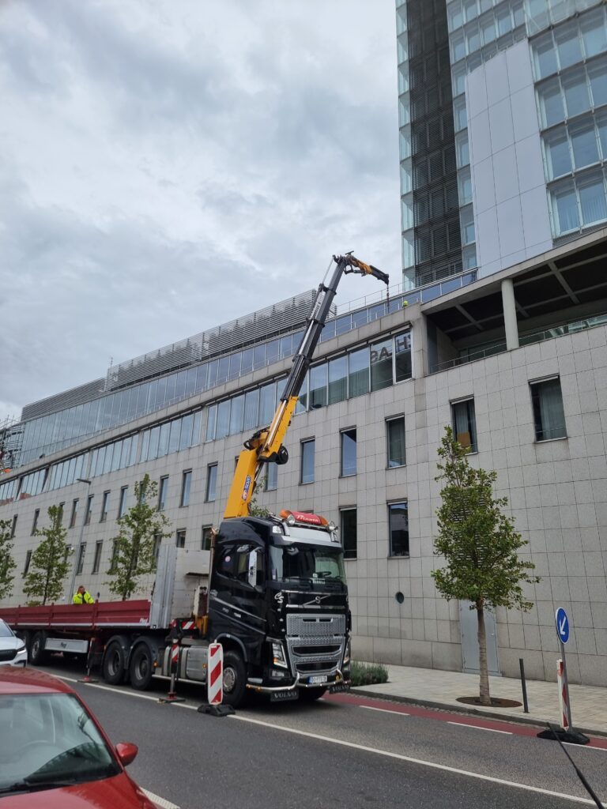
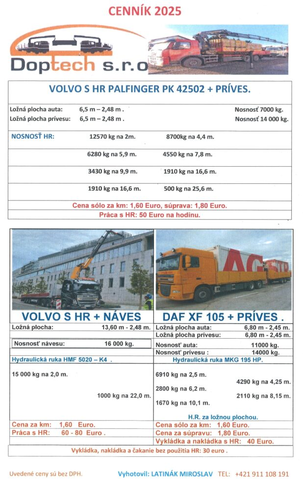

Práce s hydraulickou rukou (HR)
Nakládka, vykládka a montážne osádzanie bremien s dosahom až 25,6 m (Palfinger PK 42502) a nosnosťou až 15 t (HMF 5020-K4). Vykládka štrku, lešenia a žalúzií priamo na strechy a terasy budov.
Od roku 2013 spoľahlivo prepravujeme a vykladáme lešenie, debnenie (PERI, DOKA), stavebné kontajnery, pracovné plošiny, krovy a nadrozmerné náklady. Vodič sa Vám ozve do niekoľkých minút od objednávky.

Spojením ťažkého nákladného vozidla a výkonnej hydraulickej ruky šetríte náklady na samostatný žeriav aj čas na stavbe.
Nakládka, vykládka a montážne osádzanie bremien s dosahom až 25,6 m (Palfinger PK 42502) a nosnosťou až 15 t (HMF 5020-K4). Vykládka štrku, lešenia a žalúzií priamo na strechy a terasy budov.
Od roku 2014 víťaz dopravného tendra PERI. Každodenná logistika debnenia, lešenia, oceľových konštrukcií, reziva, krovov a betónových zvodidiel (6,5 t) po celom Slovensku a v okolitých štátoch.
Prevoz a osádzanie obytných, skladových a technologických kontajnerov, záhradných domčekov, 40 000 l nádrží, montovaných hál a nadrozmerných nákladov s kompletnou asistenciou.
Bezpečné naloženie a prevoz pracovných plošín (do 6,5 t), vysokozdvižných vozíkov (VZV), výrobných strojov, sústruhov, príslušenstva k žeriavom a vyprosťovanie techniky.
Vyberte si vhodnú súpravu podľa dĺžky ložnej plochy, užitočnej hmotnosti alebo požadovaného vyloženia hydraulickej ruky.
Zadajte parametre Vášho nákladu, požadované vyloženie hydraulickej ruky a trasu. Systém okamžite overí vhodnosť súpravy podľa záťažového diagramu a vypočíta orientačnú cenu bez DPH.
* Ceny sú uvedené bez DPH podľa oficiálneho cenníka DOPTECH 2025 (vyhotovil Miroslav Latinák). Konečnú cenu dohodnete priamo pri telefonickom potvrdení.

Zavoláte na +421 911 108 191 alebo odošlete dopyt s parametrami nákladu. Okamžite potvrdíme dostupnosť a férovú cenu.
Poradíme Vám s výberom optimálneho vozidla a spôsobom uviazania či vykládky. V priebehu niekoľkých minút Vás kontaktuje vodič pridelenej súpravy.
Náš tím profesionálov s dlhoročnou praxou náklad bezpečne naloží, prepraví v rámci SR alebo EÚ a vyloží presne na miesto určenia.
Od prvého prevozu oplotenia v roku 2013 cez víťazstvo v tendri PERI (2014) až po výškové vykládky na NBS Bratislava, Nemocnicu Bory a diaľnice D1/D4R7.
„Naša spoločnosť DOPTECH, s.r.o. vykonáva svoju činnosť v oblasti cestnej dopravy od roku 2013. Naše služby poskytujeme už viac ako 100 klientom v rámci Slovenskej republiky a v poslednom čase aj v rámci okolitých štátov. Budeme radi, keď si sami vyskúšate našu profesionalitu a dôslednosť.“
Zárukou kvality je náš tím profesionálov, ktorí sú odborníkmi v oblasti dopravy a manipulácie s ťažkou technikou. Organizačný model spoločnosti vychádza z dlhoročnej praxe zakladateľa a z neustáleho zvyšovania kvalifikácie našich vodičov a operátorov hydraulických rúk.
Všetky naše vnútroštátne a medzinárodné prepravy sa riadia prísnymi štandardmi a Dohovorom o prepravnej zmluve v medzinárodnej cestnej doprave nákladov (CMR – 7 kapitol podľa ČESMAD Slovakia):
Zavolajte priamo konateľovi a dispečerovi Miroslavovi Latinákovi alebo odošlite nezáväzný dopyt s parametrami Vášho nákladu.